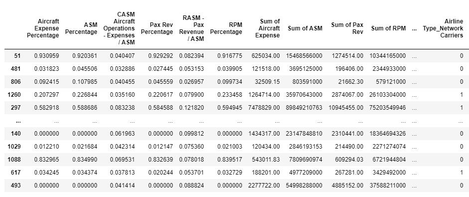
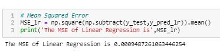
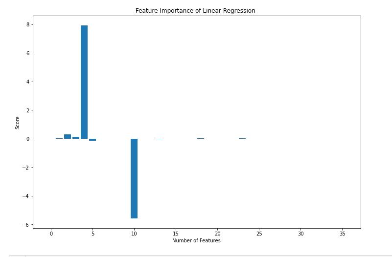
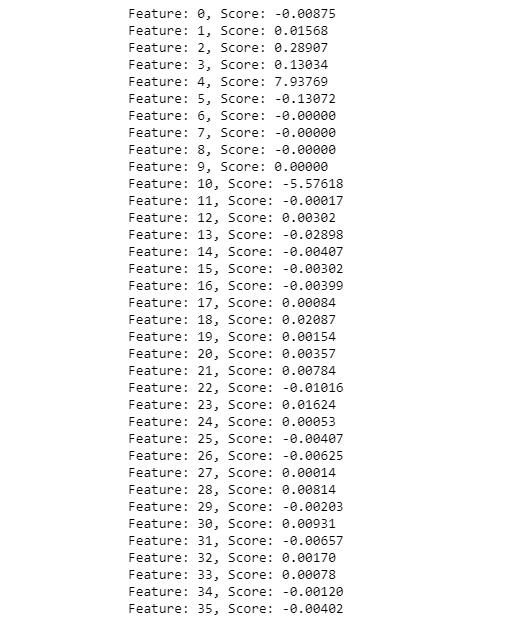
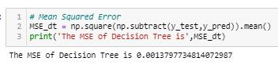
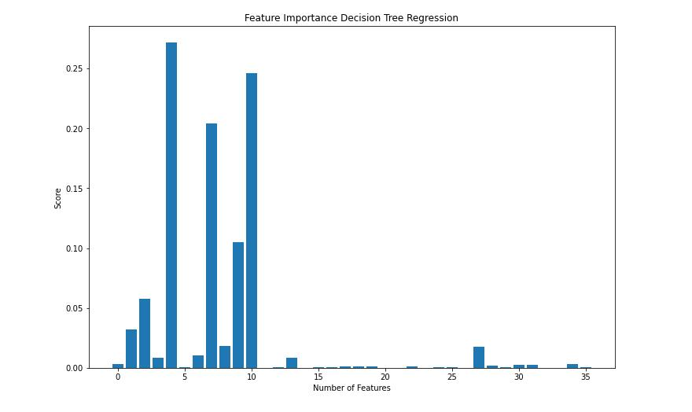

1.Target Variable: Load Factor
2. Features of Dataset(X_test)
3. Models:
- Linear Regression
- Decision Tree
Linear Regression Model
Mean Square Error
The value of MSE is very close to zero which indicates it is a good fit.
Graph of Feature Importance
The graph above presnets the score of feature importance of Linear Regression model.
Scores of Feature Importance
Feature: 4, has has the highest score - postive 7.93, among all the features
RASM - Pax Revenue / ASM (Feature 4) indicates it has a significantly postive impact of target varible.
Decision Tree Model
Mean Square Error
The value of MSE is very close to zero which indicates it is a good fit.
Graph of Feature Importance
The graph above presnets the score of feature importance of Linear Regression model.
Scores of Feature Importance